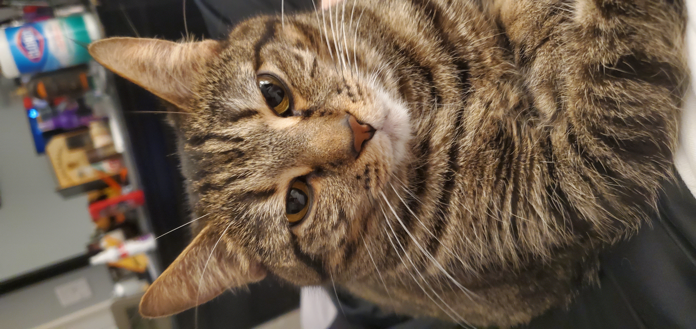
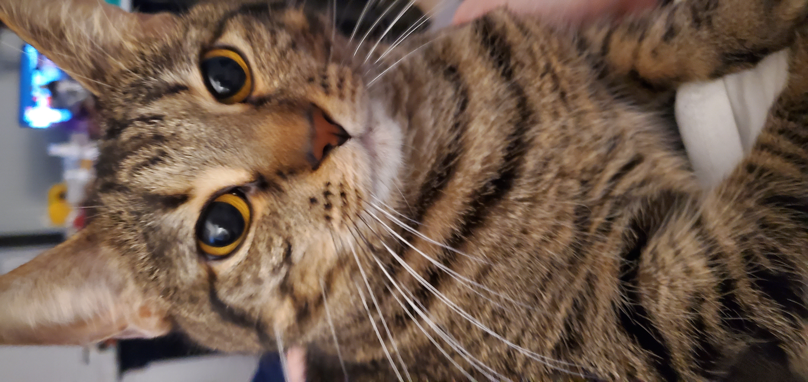

Welcome To My Cat Related and Otherwise Random Page
The first of the following videos is one that shows the interesting nature of a cats eye. They have an intriguing shape and an almost mesmerizing effect if you stare into them.
The second of the following videos is a cute video of a precious little kitten taking a nap and stretching. Cats are almost always cute, but especially so when they're little.
There are also two very chill audio tracks just below the videos. I recommend you listen to them if you need some tranquility. Be careful not to click on the one at the very bottom of the screen though, that song is a little too intense for my taste at least.
I've also included two pictures of my own cute kitty cat before the table, videos and audio. She's a sweet, cute and smart cat. I love my Meeka cat.
 Cat Breed Table
| Cat Breeds | In | Alphabetical | Order |
|---|---|---|---|
| Abyssinian | American Bobtail | American Curl | American Shorthair |
| Balinese | Bengal | Birman | Bombay |
| Chartreux | Chausie | Cornish Rex | Cymric |